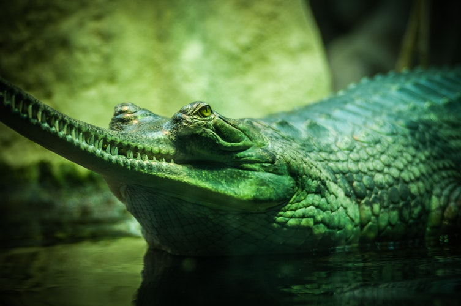
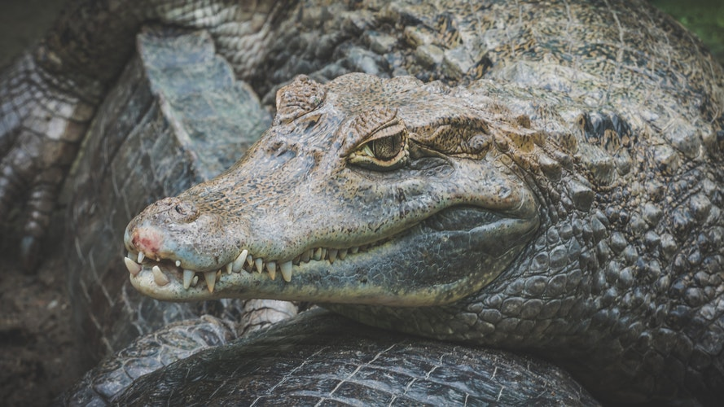
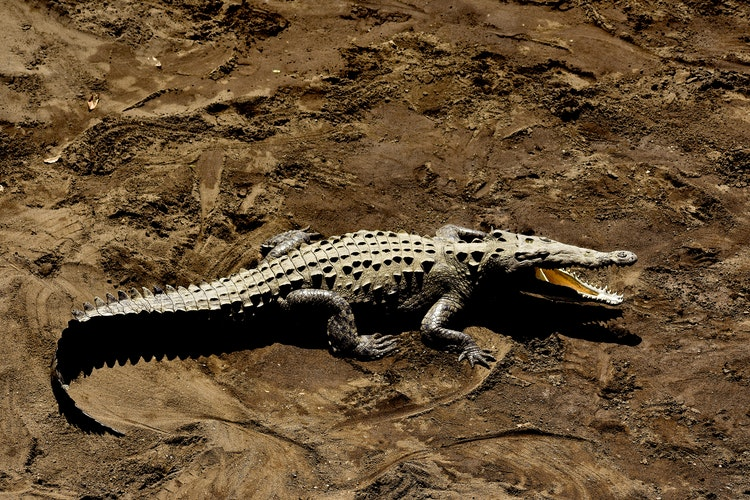
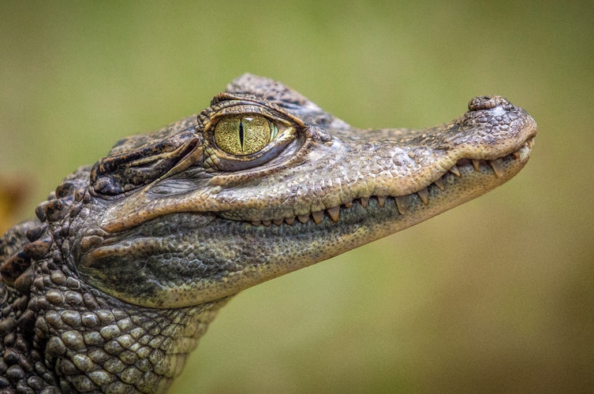
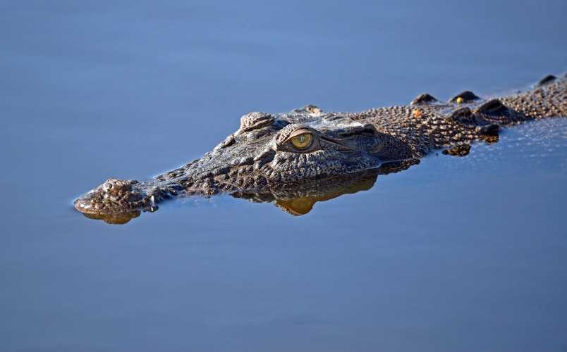
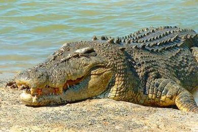

Svet Krokodila

Gavijal
Lako prepoznatljiv po jedinstvenoj uskoj njušci, gavijal je veliki, vitak krokodil koji većinu svog života provede u vodi. U poređenju s drugim krokodilima, ima relativno slabe noge sa širokim plivaćim kožicama. Gavijali se hrane uglavnom ribom, ponekad jedu i vodene ptice. U vreme parenja mužjaci postaju izrazito teritorijalni i okupljaju čitav harem ženki. Mužjaci imaju kvržicu na kraju nosa koja mu služi prilikom oglašavanja u vreme udvaranja. Ženke prave gnezda na obali daleko od dosega plime, u koja polažu do 50 neobično teških jaja (svako jaje teži oko 150g). Ženka čuva mlade, ali ih ne prenosi u ustima u vodu - vjerovatno zbog neprikladnog oblika čeljusti. Gavijal je 70-ih godina XX veka, zbog gubitka staništa, lova i ribolova, gotovo izumro, ali zahvaljujući programu zaštite, po kojem se razmnožavaju u zatočeništvu, stanje se polako popravlja.

Patuljasti krokodil
Ovaj relativno malen krokodil živi u stalnim barama i močvarama u afričkim kišnim šumama. Danju se skriva u rupama i među podvodnim korenjem, a noću lovi uz obalu. U područjima u kojima su česte poplave u vlažnom delu godine glavna su mu hrana ribe, a ostatak godine se hrani rakovima i žabama. Ženke obično polažu 10 jaja u humak od zemlje i trulog bilja. Kad izađu iz jaja, mladi krokodili dugi su oko 28 centimetara. U nekim je područjima čest, međutim u drugim delovima, zbog uništavanja staništa, broj mu se osetno smanjio. Nedavna istraživanja pokazala su da postoje tri genetski različite populacije, a neki smatraju da te podvrste trebaju biti uzdignute na status zasebne vrste. Leđa odraslih jedinki su tamne boje, najčešće crne, kao i bokovi, čija je donja strana žućkasta. Trbuh je obično svetlije boje, uglavnom žute.

Aligator
Nekad vrlo mnogo lovljen zbog svoje kože, američki aligator postao je ozbiljno ugrožen 50-ih godina. Nakon zakonske zaštite situacija se osetno poboljšala. Ovaj veliki i snažni gmaz crne je boje, široke glave i okrugle njuške, te snažno oklopljenih leđa. Ima i karakterističan veliki četvrti zub koji odgovara šupljini na gornjoj čeljusti. Ovaj aligator hrani se svim vrstama životinja. U vreme parenja mužjaci riču kako bi privukli ženke, a parenje se odvija ispod vode. Svaka ženka polaže od 25 do 60 jaja u veliko gnezdo od blata i bilja, a otkopava ih kad čuje kako je mali krokodili dozivaju. Može ostati uz mlade i do tri godine.

Crni Kajman
Crni kajman, koga love zbog njegove kože, nestao je iz mnogih područja gde je nekad živeo. U poslednjih 100 godina njihov se broj smanjio za 99%. Ima gotovo ravnu njušku, koja se naglo stanjuje pri vrhu i sive pruge na donjoj čeljusti. Danju pluta na površini, a noću ponekad izlazi na kopno kako bi se hranio. Hrani se ribama, vodenim pticama, katkad domaćim životinjama, pa čak i ljudima. Ženke polažu 30-65 jaja, koja čuvaju i ostaju uz mlade kada se izlegu. Obični kajman, koga zovu i Kajman naočar zbog koštanog grebena između očiju koji nalikuje na okvir naocara je poreklom iz tropskih krajeva izmedju Juznog Meksika i Brazila.

Indopacifički krokodil
Ova velika siva, smeđa ili crna životinja poznata i kao morski krokodil, najveći je krokodil na svetu. Masa najvećih zabeleženih primeraka iznosi više od 1 tone, međutim ima dovoljno snage u nogama da podigne tijelo kako bi mogao hodati po kopnu. Danas su, pre svega zbog lova, ovakvi veliki primerci vrlo retki. Jednako se dobro snalaze i u slatkoj vodi i u moru. Ovi noćni gmizavci imaju raznoliku prehranu, koja uključuje sisare, ptice i ribe. Velika su opasnost za ljude i odgovorni su za mnoge smrtne slučajeve. Pare se u vodi, a ženke polažu oko 60 jaja u muljevita gnezda na obali iznad granice plime. Ženke čuvaju legla i ostaju uz mlade prvih nekoliko sedmica njihovog života. Indopacifički krokodil često izlazi na obalu i sunča se otvorenih usta omogućujući malim pticama da očiste ostatke hrane koja je zaostala među zubima.

Nilski krokodil
Nilski krokodil ima tamnomaslinasto ili sivo telo sa tamnim poprečnim prugama. Najčešće živi u velikim rekama, jezerima, močvarama i u ušćima. Za vreme toplih dana izlazi na obalu kako bi se sunčao. Hrani se ribama, antilopama, zebrama, čak i bivolima, a može iskočiti kako bi zgrabio ptice u gnezdu ili povukao životinju koja pije vodu. Iako po prirodi samotna životinja, nekoliko krokodila može se udružiti prilikom lova, zajedno terajući jata riba u plitku vodu. Mužjaci su teritorijalni i uspostavljaju dominacijsku hijerarhiju. Ženke polažu 16-80 jaja u rupe iskopane na obali izvan dosega vode, a koriste se istim mestom celoga života. Ženke čuvaju jaja dok se ne izlegu. Tek izlegli krokodili oglasavaju se, te ih ženka otkopava i nežno ustima prenosi do vode. Ostaju zajedno 6 do 8 sedmica, a zatim se postupno razdvajaju.

Nova Ideja!
U Srbiji je izdvojeno i zakonom zaštićeno oko 75 rezervata, najviše specijalnih i strogih, a značajan deo odnosi se i na naučno-istraživačke i opšte. Postoji ogromna važnost očuvanja jedinstvenih ekosistema, životinjskih i biljnih vrsta koje izumiru ili su ugrožene na neki drugi način, lepote nesvakidašnjih prirodnih mesta, neke interesantne vste koje nisu ugrožene kao i druge životinje koje se u Srbiji nepravdeno istrebljuju na svakom koraku (a neverovatno važne za ravnotežu u prirodi), kao što su zmije i vukovi.